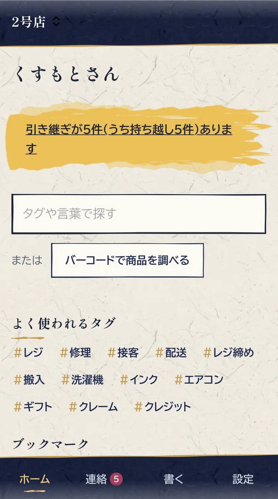
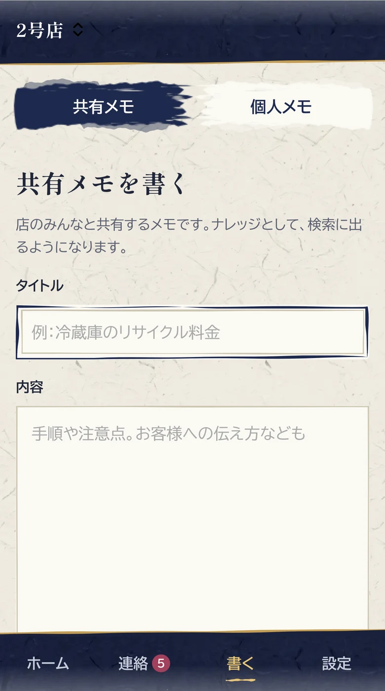
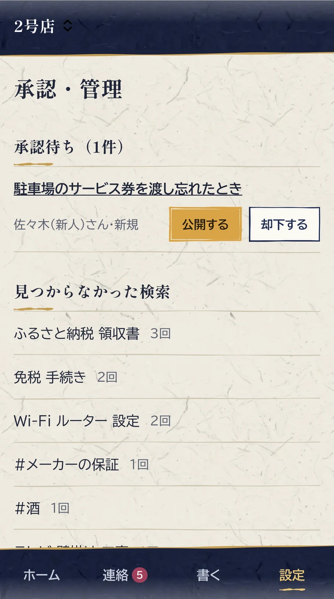
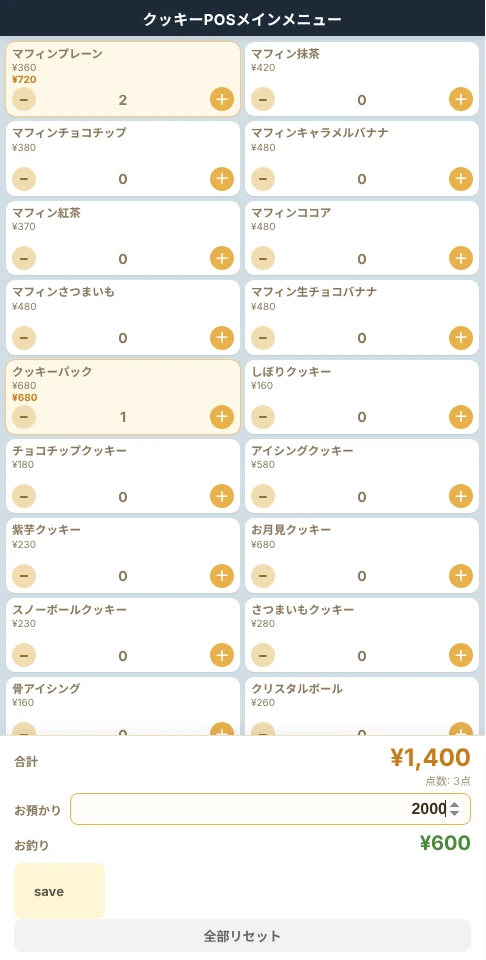
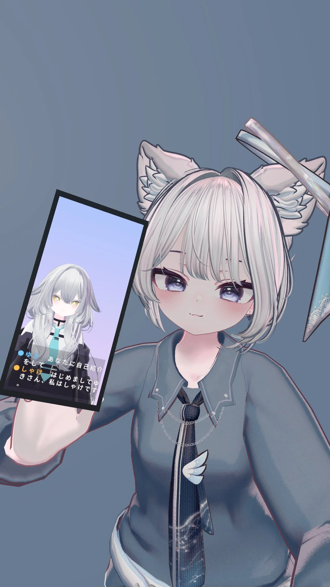
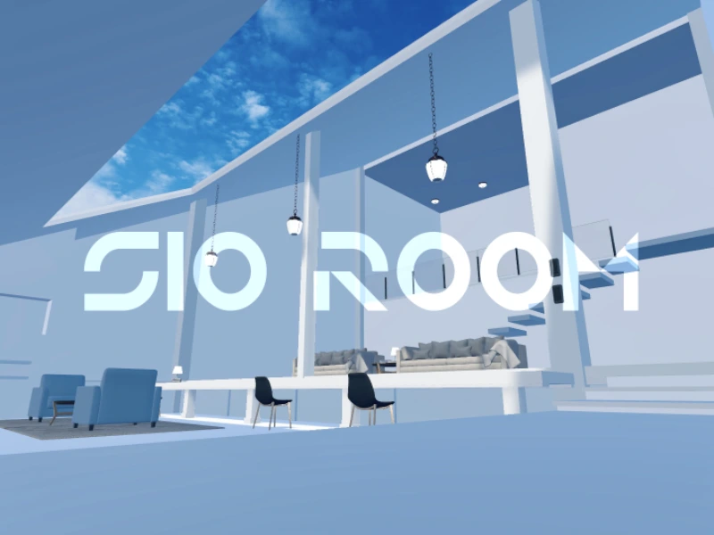
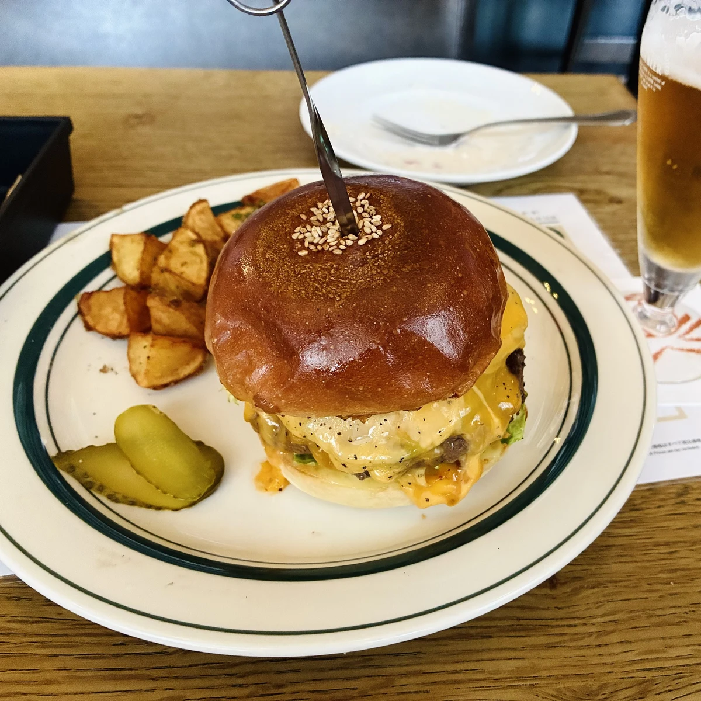

ツギガミ
現場のメモから研修資料を育てる、小売店舗向けのナレッジサービス。
- 役割
- 代表として1人で企画・開発・営業
- 対象
- 小売店舗（最初は家電量販店）
- 技術
- TypeScript / PostgreSQL
自動テスト430件以上 - 状況
- 開発中。ビジネスコンテスト「KIYO Challenge Gate」に応募
背景
店舗の仕事のコツは、ベテランの頭の中と、一人ひとりの手元のメモにあります。その人が辞めると、積み上げたノウハウも一緒に消えてしまいます。
一方で、本部がつくる研修資料と、現場の個人メモは別々に存在していて、つながっていません。この2つを一つの流れにできないか、というのが出発点です。
つくったもの
本部の研修資料と現場の個人メモを、一つの循環でつなぐサービスです。現場で書かれたメモが研修資料を育て、育った資料がまた現場に戻ります。ベテランのノウハウを、辞めても残る形にします。
現場のメモを取り込んで育っていく
日々の気づきやコツを書きためる
名前と理念
名前は、平安時代の料紙技法「継ぎ紙」に由来します。異なる紙を継ぎ合わせて一枚に仕立てる技法で、本部の資料と現場のメモを継いで一つにするサービスの考え方と重ねています。
企業理念利己的な利他
見た目
ロゴは、上下2色を「継ぎ目」でつなぐ正方形です。配色は山吹（上）と紺（下）。



画面は、架空の店舗のサンプルデータで撮っています。
POSレジアプリ
親のクッキー店のためにつくり、今も毎日お店で使われている会計アプリ。
- 役割
- 個人開発（企画から運用まで）
- 対象
- 親が開業したクッキー店と、その従業員
- 形態
- Webアプリ
- 状況
- 店舗で稼働中。操作支援機能を追加開発中
背景
親が開業したクッキー店では、会計を手作業で行っていて、手間がかかっていました。それに気づいて、自分からレジのアプリをつくり始めました。
つくったもの
- 会計を簡単にするレジ機能
- 売上データを記録・集計する機能
- 従業員の操作を支援する機能（開発中）
会計を楽にするだけで終わらせず、売上を記録して集計できるように設計しました。そのデータをもとに、商品ごとの生産量を見直しています。
結果
売上データから生産量を見直したことで、店の廃棄率を約2割減らせました。
学んだこと
成果を左右するのは、機能の良さよりも、ITに詳しくない従業員の方が毎日使い続けられるかどうかでした。今も従業員の方の声を聞きながら改良を続けています。
見た目

AIをスマホで飼うシステム
メタバースの中で、スマホ型の道具を通してAIと会話できるシステム。
- 役割
- 個人開発
- 状況
- 開発中
つくっているもの
- アバターが手に持つスマホの画面に、AIのキャラクターが映る
- 話しかけると、キャラクターが返事をする
- 会話は画面の字幕にも出る
見た目

使用アバター：スマホの中は「rurune -ルルネ-」（製作：Paryi）、スマホを持っているのは「ショコラ -Chocolat-」（製作：こまど / komado）
イラスト
AIは使わず、自分の手で描いた一次創作の絵です。
SIO ROOM
VRChatで公開しているワールドです。
- 自分で作ったところ
- 部屋のモデリング
- アセットを使ったところ
- 照明、ソファー、椅子などの小物（BOOTHで入手）

音楽
AIは使わずに作った、一次創作の曲です。
ハンバーガー屋巡り
ハンバーガー屋を巡るのが趣味です。
